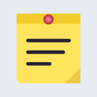

Sticky notes, a calendar and photo memories — on your phone.
The real app file. One tap to download, then tap the steps below — about a minute.
Download Sticky-Days.apkYour notes, plans and photos stay inside the app on this phone. iPhone cannot install this file — on iPhone use “Add to Home Screen” further down.
It installs like an app: own icon on the home screen, opens full screen, works with no internet. Your notes, plans and photos are saved on the phone only — nothing is uploaded.
Already installed — open it from the home-screen icon.
The pin icon appears on the home screen and opens Sticky Days full screen.
Open the app and use the install icon in the address bar (Chrome or Edge), or just keep using it in the browser — it works the same. To move it to a phone, open this page on the phone itself.
Apple does not allow installing an app file (.ipa) from a website. The only way onto an iPhone home screen is Add to Home Screen from Safari, which is what the iPhone steps further down this page do. A real App Store app would need a Mac, Xcode and a paid Apple developer account.
Sticky Days is packaged as a real Android app file — Sticky-Days.apk, download and install steps at the top of this page.
The app carries its own copy of Sticky Days, so it opens instantly and keeps the notes and photos inside the app on this phone. Updating to a newer file later keeps the data — only uninstalling or clearing app data erases it. Play Store publishing is a separate step and needs a Google developer account.
The whole app is one HTML file. Download Sticky-Days to keep a backup — it opens in any browser. It is a backup copy, not the installed app: a file opened from storage does not keep its notes as reliably as the installed icon does.
Nothing here is stored on a server. Notes live in this phone’s browser storage; photos live in its own database. Deleting the app or clearing browser data deletes them, so keep the backup copy if the notes matter.